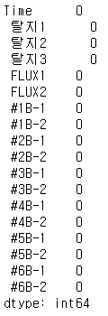
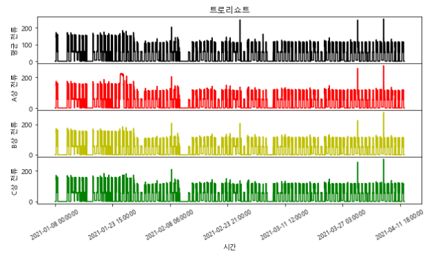
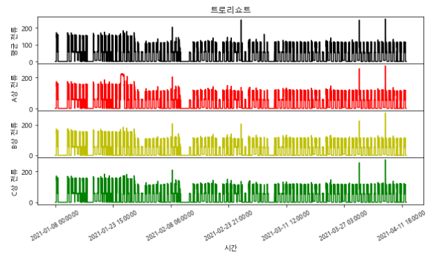
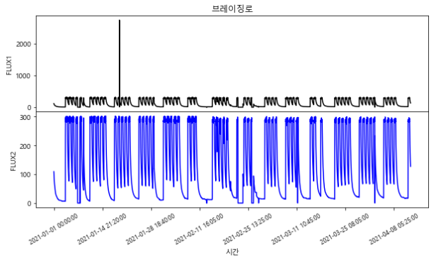
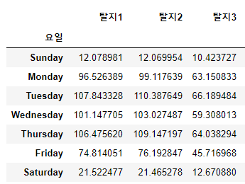
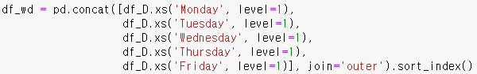
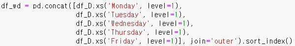
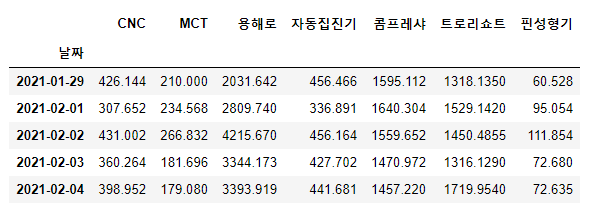
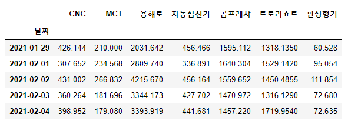
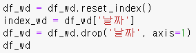

제조데이터 분석
2021년 1학기에 수강한 빅데이터분석 교과목에서 수행한 텀프로젝트입니다.
제조데이터를 분석하여 새로운 정보를 도출해내는 것이 목표입니다.
매주 각 조원들이 데이터를 분석해보고 보고서를 작성했는데, 아래는 제가 작성한 부분입니다.
20210423
트로리쇼트 데이터
- 유효전력량(단위: KWH): 실제 사용되는 유효한 전력량(누적)
- 유효전력(단위: KW): 실제 사용되는 유효한 전력
- 평균전압(단위: V): a,b·c 상 전압 평균
- A·B·C 상 전압(단위: V): a·b·c 상 걸리는 전압
- 평균전류(단위: A): a·b·c 상 전류 평균
- A·B·C 상 전류(단위: A): a·b·c 상 흐르는 전류
- 무효전력(단위: KVAR): 손실되는 무효한 전력
- 무효전력량(단위: KVARH): 손실되는 무효한 전력량(누적)
- 주파수(단위: Hz): 교류전기 주파수(60Hz)
- 역률(단위: %): 유효하게 사용되는 전력의 비율(100 이상 값은 100)
브레이징로 데이터

- 속도(단위: cm/m): 분당 이동거리
- 압력(단위: kgf/cm²): 단위 면적당 가해지는 물량
- 유량(단위: m³/h): 단위 시간당 이동한 액체의 양
- 온도(단위: ℃): 물질의 뜨겁고 찬 정도를 나타내는 물리량(A·B·C로 온도)
20210430
트로리쇼트와 브레이징로 데이터 모두 결측치는 발견되지 않았다.
다만 각 자료에서 0 값은 일부 존재했다.
 

데이터 분포를 파악하기 위해 plot 함수로 시간에 따른 각 데이터의 변화를 나타내도록 자료를 시각화했다.
트로리쇼트의 경우 일부 데이터가 공통으로 1월 말 부근의 측정값에서 비정상적인 범위를 보였다.
유효전력량과 무효전력량은 누적 데이터임을 고려했을 때 1월 말 부근 일부 데이터의 비정상적 범위는 측정 오류로 짐작된다.
브레이징로도 마찬가지로 시각화하여 데이터 변화를 파악해보았다.
브레이징로의 경우 각 데이터가 서로 비슷하게 변화하는 모습으로 데이터 간 상관관계가 비교적 높아 보인다.
이처럼 시각화를 통해 값의 대체적인 범위나 변화, 비정상적인 값의 분포 등을 한눈에 파악할 수 있었다.
20210507
지난주에 데이터 분포를 파악하기 위해 자료를 시각화했으나 브레이징로의 온도 데이터는 항목이 많아 분량상 분석하지 못하여 이번 주에 계속해서 진행한다.
지난주와 마찬가지로 plot 함수로 시간에 따른 각 데이터의 변화를 나타내도록 자료를 시각화했다.
1B ~ 6B의 공정에서는 대체로 비슷한 데이터의 분포를 보인다.
1B 공정의 3월 말 부근에서 평소 데이터의 값들과 차이가 있는 것으로 보아 측정 오류 혹은 오작동으로 짐작된다.
또 1월 중순 데이터에서는 5B-1만 일시적으로 0 값이 기록되어 있는데 주변 데이터는 그대로 유지된 걸로 보아 해당 데이터는 측정 오류로 짐작된다.
탈지 공정은 부품 표면의 방청유, 압연유, 절삭유 등 유기물질과 쇳가루, 연마재, 먼지 등과 같은 무기물질을 금속 표면에서 제거하는 공정을 말한다.
측정된 온도로 탈지 공정 데이터가 모두 규칙적으로 변하고 있음을 확인했다.
Flux 공정은 브레이징 시 부품 표면이 직접 대기에 노출되면 산화하는 등의 반응이 일어날 수 있으므로 이를 막기 위해 Flux 용액을 이용하여 부품 표면을 처리하는 공정이다.
FLUX1의 1월 중순 데이터에서 약 2,500도 이상의 비정상적인 값이 확인되는데 평균적인 데이터 분포로 보아 이는 측정 오류로 보인다.
20210514
트로리쇼트의 전력 데이터를 불러온 후 각 데이터를 요일별, 시간대별 평균으로 정리한 새로운 DataFrame을 생성한다.
생성된 트로리쇼트 데이터의 요일별 평균과 시간대별 평균 DataFrame 일부다.
표 형태로 되어 있으므로 데이터 분포를 파악하기 수월하도록 시각화한다. 다만 데이터가 많으므로 대표로 유효전력의 데이터를 시각화한다.
트로리쇼트 유효전력의 요일별 평균을 시각화했다.
평일의 평균 유효전력이 주말보다 높고 특히 화요일을 기준으로 주 초반의 전력 사용량이 비교적 많은 것으로 파악된다.
주말에서도 토요일이 일요일보다 평균 유효전력이 조금 더 높은 것으로 볼 때 간혹 토요일에 잔업이 있음을 추측해볼 수 있다.

트로리쇼트 유효전력의 시간대별 평균도 시각화했다.
7시 ~ 17시의 시간대에서 주로 전력이 사용됨을 알 수 있다. 따라서 공장 가동시간은 대략 오전 7시 ~ 오후 5시 정도로 보인다. 그중에서도 특히 오전 시간대와 13시 시간대의 전력 사용량이 상대적으로 많은 편이다.
마찬가지로 브레이징로 온도 데이터에서 새롭게 생성한 요일별 평균과 시간대별 평균 DataFrame의 일부다.
브레이징로 온도 데이터에서는 대표로 탈지1 공정의 데이터를 시각화한다.
브레이징로 온도 탈지1 공정의 요일별 평균과 시간대별 평균을 시각화했다.
요일별 평균에서 월 ~ 목의 평균 온도는 높은 데 반해 비교적 금요일의 평균 온도가 낮은 것으로 볼 때 다른 요일에 비해 금요일의 브레이징로 가동시간이 짧거나 가동하지 않음을 추측할 수 있다.
시간대별 평균에서 7시 ~ 16시의 평균 온도가 비교적 높고 17시부터 점차 평균 온도가 내려가는 것을 확인할 수 있다.
또 8시의 평균 온도가 가장 높은 것에서 브레이징로 온도를 가동 초반에 많이 높인 후 사용하는 동안 일정 수준을 유지하는 것으로 보이며, 비교적 평균 온도가 낮은 12시 이후로 평균 온도가 조금씩 상승하는 것으로 보아 이때 다시 브레이징로의 온도를 높임을 알 수 있다. 이는 트로리쇼트의 평균 유효전력이 오전 시간대와 13시에서 비교적 높은 것과 연관 지어 고려해볼 수 있다.
20210521

이번에는 여러 기계에 공통으로 존재하는 유효전력 데이터를 다뤄보려 한다.
유효전력 데이터를 포함하는 모든 자료를 불러온다.
데이터마다 측정 기간에 다소 차이가 있어 정확한 비교를 위해 같은 기간의 데이터를 추출하도록 한다. 기간은 2021년 1월 29일 ~ 2021년 4월 12일이다.

전처리된 데이터 일부를 출력한다.
여러 기계의 유효전력 합계를 파이 차트로 시각화하여 나타낸다.
그 결과 용해로가 42.49%로 유효전력 합계에서 가장 큰 비중을 차지했고, 콤프레샤 23.58%, 트로리쇼트 21.28%, 자동집진기 5.15%, MCT 3.01%, CNC 3.83%, 핀성형기 0.67% 순이었다.
용해로, 콤프레샤, 트로리쇼트가 전체 약 87%의 유효전력을 차지하고 있어 상당 부분의 전력이 이 세 종류의 기계들로 집중되고 있음을 알 수 있었다.
시간대별 비중을 시각화하기 위해 전처리한다.
전처리된 데이터 일부를 출력한다.
여러 기계의 시간대별 평균 유효전력 비율을 꺾은 선형 차트로 시각화하여 나타낸다.
0시를 기준으로 콤프레샤의 비중이 약 절반을 차지할 정도로 가장 크고, 용해로가 두 번째로 큰 비중을 차지했다.
그러나 공장 가동 시간이 되면 콤프레샤의 비중은 약 20%로 떨어지며, 트로리쇼트의 비중이 약 30%로 증가하게 된다. 용해로와 핀성형기의 경우 공장 가동 전후 비중이 비슷했으며 자동집진기의 비중은 공장 가동 시간 동안 소폭 상승, CNC와 MCT는 소폭 감소했다.
시간대별 평균 유효전력도 꺾은 선형 차트로 시각화하여 나타내보았다.
공장 가동 시간 동안 용해로, 트로리쇼트, 자동집진기의 평균 유효전력은 눈에 띄게 상승한 데 반해 나머지 기계들은 공장 가동 전후로 큰 차이가 없는 것을 확인할 수 있다.
또 용해로의 경우 공장 가동이 끝난 직후의 유효전력이 이후 공장을 가동하지 않는 시간대의 유효전력 평균보다 낮음을 알 수 있었다.
20210528

이번에는 여러 기계에 공통으로 존재하는 유효전력 데이터를 주별로 합산하여 시각화해보려 한다.
유효전력 데이터를 포함하는 모든 자료를 불러온다.

데이터마다 측정 기간에 다소 차이가 있어 정확한 비교를 위해 같은 기간의 데이터를 추출하도록 한다. 기간은 2021년 1월 29일 ~ 2021년 4월 12일이다.
여러 기계의 주별 유효전력 합계를 구한 후 일부를 출력한다.
여러 기계의 주별 유효전력 합계를 꺾은선 그래프로 시각화하여 나타낸다.
일~토의 주간 유효전력 합을 계산하므로 4주(1/24~1/30)와 15주(4/11~4/17)의 경우 7일 미만의 데이터가 합산되어 비교적 값이 작았다.
이어서 pyecharts 라이브러리를 이용하여 데이터를 편리하게 다룰 수 있도록 해보려 한다.
그래프에 사용될 인덱스를 정의한다.
pyecharts 라이브러리로 여러 기계의 주별 유효전력, 평균, 합계를 시각화한다.
4주와 15주를 제외한 5주~14주의 데이터를 그래프로 나타내도록 한다.

시각화 결과 평일 기간에 공휴일이 있었던 6주(2/11, 2/12 설날)와 9주(3/1 삼일절)의 유효전력 합은 다른 주보다 상대적으로 값이 작았다. 또 공휴일 주 전후를 비교했을 때 5와 8주가 7주와 10주보다 유효전력 합이 좀 더 큰 사실을 알 수 있었다.
일반적으로 주당 총 4만 KW 대의 유효전력이 사용되는데, 2월보다는 3월의 유효전력 합이 전체적으로 더 컸다.
20210604
이번에는 여러 기계에 공통으로 존재하는 유효전력 데이터를 일별로 합산한 값과 그 추세선을 나타내보려 한다.
유효전력 데이터를 포함하는 모든 자료를 불러온다.

데이터마다 측정 기간에 다소 차이가 있어 정확한 비교를 위해 같은 기간의 데이터를 추출하도록 한다. 기간은 2021년 1월 29일 ~ 2021년 4월 12일이다.
여러 기계의 일별 유효전력 합계를 구한 후 평일과 주말을 구분하기 위해 요일 인덱스를 추가하고 일부를 출력한다.
 

 

유효전력 합계를 주말과 평일을 구분해 각각의 DataFrame을 만든다.
주말 유효전력 DataFrame에 공휴일이었던 평일(2/11, 2/12, 3/1)을 추가하고 평일 유효전력 DataFrame에서 제거한 후 정렬한다.
각 DataFrame의 일부를 출력한다.
평일과 주말의 일별 유효전력 합계를 각각 시각화한다.
대체로 평일의 경우 값이 크고 주말의 경우 값이 작은 것을 알 수 있다.
따라서 상대적으로 큰 값을 갖는 평일 유효전력 합계로 추세선을 나타내려 한다.
평일 유효전력 DataFrame의 인덱스를 초기화하고 날짜 데이터를 따로 분리한다.
사이킷런의 선형 회귀 모델을 이용하여 평일 유효전력 값을 꺾은 선형 그래프로 나타내고 점선으로 추세선을 그린다.
대부분 기계의 일별 유효전력 추세선이 평탄한 것에 비해 용해로는 조금 증가하는 추세임을 알 수 있다.
지금의 추세대로라면 4월 12일 이후 5, 6월의 용해로 유효전력 값은 지난 2, 3월의 유효전력 값보다 더 클 것을 짐작할 수 있다.
따라서 총 전력 사용량이 증가함에 따라, 전기 요금 상승도 어느 정도 예측해볼 수 있다.
20210611
이번에는 여러 기계에 공통으로 존재하는 유효전력 데이터를 일별로 합산한 값과 생산량 데이터의 관련성을 알아보려고 한다.
유효전력 데이터와 생산량을 포함하는 모든 자료를 불러온다.

데이터마다 측정 기간에 다소 차이가 있어 정확한 비교를 위해 같은 기간의 데이터를 추출하도록 한다. 기간은 2021년 1월 29일 ~ 2021년 4월 12일이다.

여러 기계의 일별 유효전력 합계를 구한 후 일부를 출력한다.
일별 유효전력 합계 DataFrame에 조형기, 주입기, 핀 성형기의 일별 생산량 합계를 추가한다.

일별 유효전력 합계를 시각화한다.
일별 생산량 합계를 시각화한다.
핀 성형기 생산량에서 2월 1일과 2월 2일의 값이 유독 큰 것을 알 수 있다.
이상치로 판단되므로 전처리한다.
2월 1일과 2월 2일의 핀 성형기 생산량을 이를 제외한 다른 날짜에서 가장 큰 값으로 수정한다.
수정 후의 일별 생산량 합계를 시각화한다.
유효전력과 생산량의 관련성을 파악하기 위해 상관관계를 히트맵으로 시각화한다.
조형기와 주입기의 생산량은 상관계수가 0.98로 매우 높았으며 이 두 생산량은 용해로와 자동집진기의 유효전력과 상관계수 약 0.8 이상의 높은 상관관계를 갖고 있었다.
또 핀 성형기의 경우 자신의 유효전력과 상관계수 0.80으로 다른 기계들보다 높은 상관관계를 갖고 있었다.
상관계수 0.89로 다른 데이터보다 높은 상관관계를 갖는 용해로의 유효전력과 조형기 생산량의 관계를 산포 그래프와 선형 회귀로 시각화한다.
조형기의 경우 유효전력 데이터가 없음에도 용해로와의 관계로부터 용해로 가동 시 조형기 역시 가동될 확률이 높음을 알 수 있었다.
따라서 용해로의 전력 사용량이 증가함에 따라 조형기의 전력 사용량 또한 선형적으로 증가할 것을 추측해볼 수 있다.
상관계수 0.89로 다른 데이터보다 높은 상관관계를 갖는 용해로의 유효전력과 주입기 생산량의 관계를 산포 그래프와 선형 회귀로 시각화한다.
주입기 역시 유효전력 데이터가 없음에도 용해로와의 관계로부터 용해로 가동 시 주입기 또한 가동될 확률이 높음을 알 수 있었다.
따라서 용해로의 전력 사용량이 증가함에 따라 주입기의 전력 사용량 또한 선형적으로 증가할 것을 추측해볼 수 있다.
상관계수 0.80으로 다른 데이터보다 높은 상관관계를 갖는 핀 성형기의 유효전력과 핀 성형기 생산량의 관계를 산포 그래프와 선형 회귀로 시각화한다.
이를 통해 일부 기계의 유효전력량이 증가함에 따라 관련 생산량도 선형적으로 증가한다는 사실을 알 수 있었다.
또 해당 유효전력량을 통해 관련 생산량을 유추해볼 수도 있겠다.